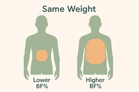
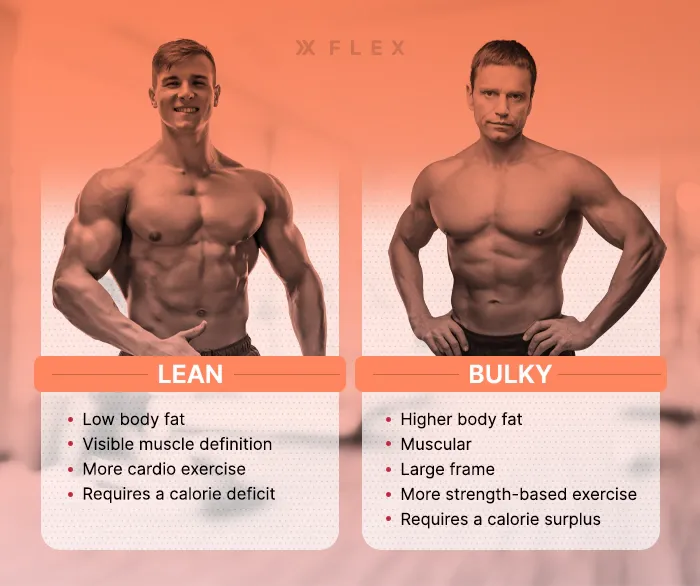

Body Fat Percentage (BF%)
1.Amount of fat compared to your total body weight.
2.Too high = risk of obesity-related diseases.
3.Too low = can affect health & energy.

Lean Body Mass (Muscle Mass)
1.All body weight minus fat (muscles, bones, organs, water).
2.All body weight minus fat (muscles, bones, organs, water).
Body Water Percentage
1.How much of your weight is water (usually 50–70%).
2.Hydration level indicator.
Bone Mass
1.Weight of bones in your body.
2.Helps in understanding bone strength.
Visceral Fat
1.Fat around internal organs (more dangerous than subcutaneous fat).
2.High levels = higher risk of diabetes, heart disease.